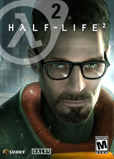

Half-Life 2:
1998. HALF-LIFE sends a shock through the game industry with its combination of pounding action and continuous, immersive storytelling. Valve's debut title wins more than 50 game-of-the-year awards on its way to being named "Best PC Game Ever" by PC Gamer, and launches a franchise with more than eight million retail units sold worldwide.
NOW. By taking the suspense, challenge and visceral charge of the original, and adding startling new realism and responsiveness, Half-Life 2 opens the door to a world where the player's presence affects everything around him, from the physical environment to the behaviors even the emotions of both friends and enemies.
The player again picks up the crowbar of research scientist Gordon Freeman, who finds himself on an alien-infested Earth being picked to the bone, its resources depleted, its populace dwindling. Freeman is thrust into the unenviable role of rescuing the world from the wrong he unleashed back at Black Mesa. And a lot of people he cares about are counting on him.
The intense, real-time gameplay of Half-Life 2 is made possible only by Source®, Valve's new proprietary engine technology. Source provides major enhancements in:
Characters: Advanced facial animation system delivers the most sophisticated in-game characters ever seen. With 40 distinct facial "muscles," human characters convey the full array of human emotion, and respond to the player with fluidity and intelligence.
Physics: From pebbles to water to 2-ton trucks respond as expected, as they obey the laws of mass, friction, gravity, and buoyancy.
Graphics: Source's shader-based renderer, like the one used at Pixar to create movies such as Toy Story® and Monster's, Inc.®, creates the most beautiful and realistic environments ever seen in a video game.
AI: Neither friends nor enemies charge blindly into the fray. They can assess threats, navigate tricky terrain, and fashion weapons from whatever is at hand.
Buy Half-Life now for only $30!
Continue to Store>>>
MINIMUM: 1.7 GHz Processor, 512MB RAM, DirectX® 8.1 level Graphics Card (Requires support for SSE), Windows® 7 (32/64-bit)/Vista/XP, Mouse, Keyboard, Internet Connection.
RECOMMENDED: Pentium 4 processor (3.0GHz, or better), 1GB RAM, DirectX® 9 level Graphics Card, Windows® 7 (32/64-bit)/Vista/XP, Mouse, Keyboard, Internet Connection.